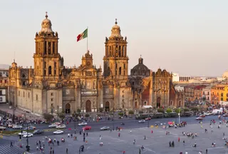
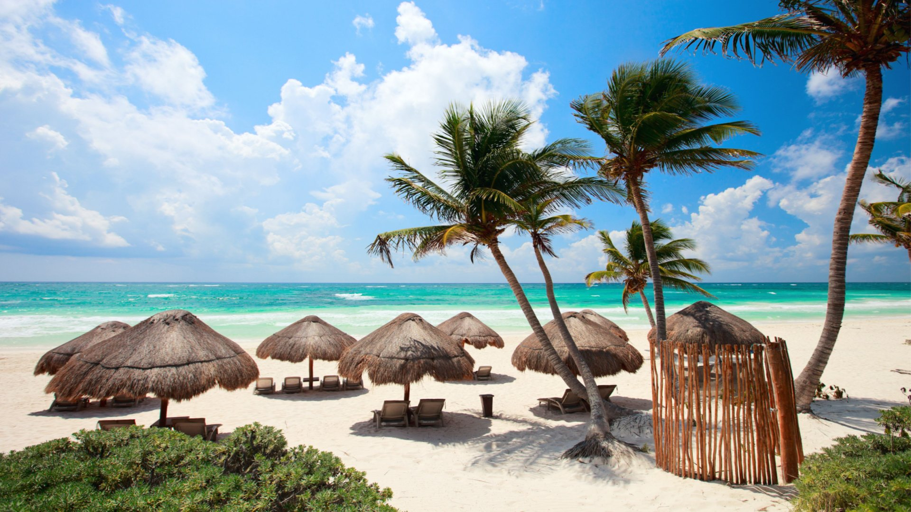
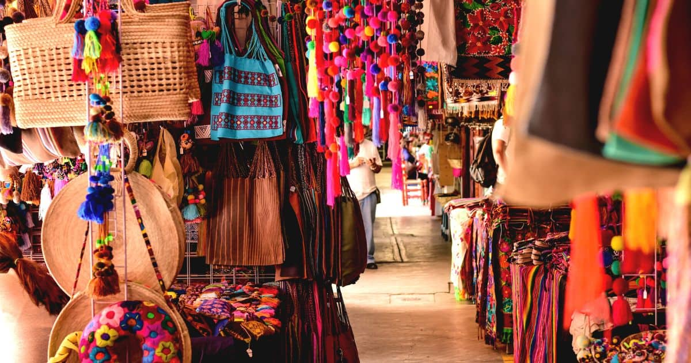
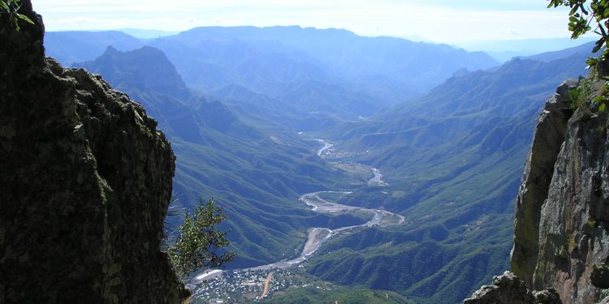
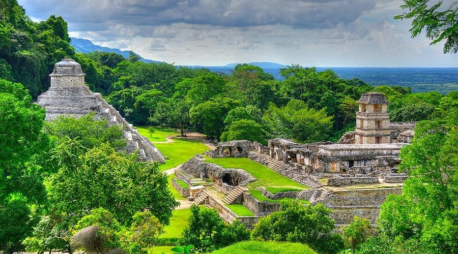
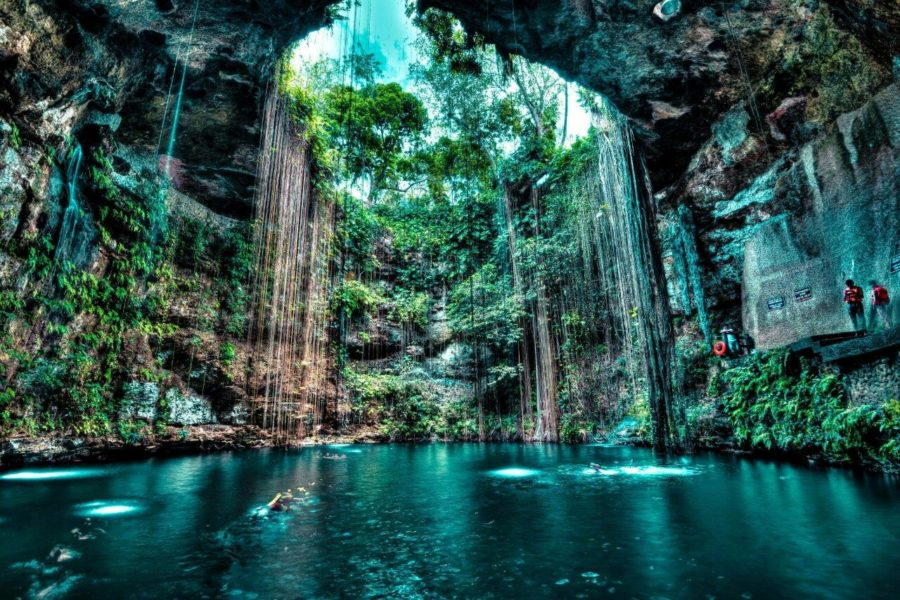
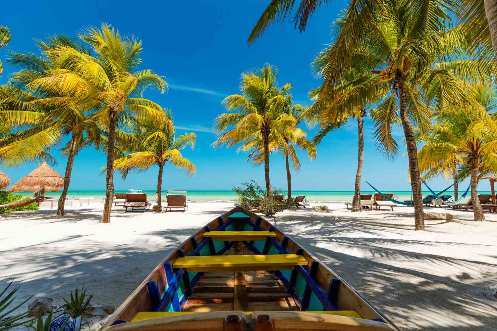

📸 México Gallery

Chichén Itzá

Mexico City — Zócalo

Tulum Beach & Ruins

Oaxaca — Markets & Crafts

Copper Canyon

Palenque — Jungle Ruins

Cenotes (freshwater sinkholes)

Spanning deserts, jungles, high plateaus and sandy beaches, México is a country of deep traditions, vivid colors, and remarkable archaeological heritage. From pre-Hispanic civilizations to colonial cities and vibrant contemporary culture, México invites discovery.
Regions like the Yucatán Peninsula, Oaxaca, Chiapas and the central highlands each have distinct food, art and history. Street markets, festivals (like Día de Muertos), and centuries-old crafts bring local life to every corner.
Mexico,officially the United Mexican States,is a country in North America. It is considered to be part of Central America by the United Nations geoscheme. It is the northernmost country in Latin America, and borders the United States to the north, and Guatemala and Belize to the southeast; while having maritime boundaries with the Pacific Ocean to the west, the Caribbean Sea to the southeast, and the Gulf of Mexico to the east. Mexico covers 1,972,550 km2 (761,610 sq mi),and is the thirteenth-largest country in the world by land area. With a population exceeding 130 million, Mexico is the tenth-most populous country in the world and is home to the largest number of native Spanish speakers. Mexico City is the capital and largest city, which ranks among the most populous metropolitan areas in the world.
Human presence in Mexico dates back to at least 8,000 BC. Mesoamerica, considered a cradle of civilization, was home to numerous advanced societies, including the Olmecs, Maya, Zapotecs, Teotihuacan civilization, and Purépecha. Spanish colonization began in 1521 with an alliance that defeated the Aztec Empire, establishing the colony of New Spain with its capital at Tenochtitlan, now Mexico City. New Spain became a major center of the transoceanic economy during the Age of Discovery, fueled by silver mining and its position as a hub between Europe and Asia. This gave rise to one of the largest multiracial populations in the world. The Peninsular War led to the 1810–1821 Mexican War of Independence, which ended Peninsular rule and led to the creation of the First Mexican Empire, which quickly collapsed into the short-lived First Mexican Republic.
In 1848, Mexico lost nearly half its territory to the American invasion. Liberal reforms set in the Constitution of 1857 led to civil war and French intervention, culminating in the establishment of the Second Mexican Empire under Emperor Maximilian I of Austria, who was overthrown by Republican forces led by Benito Juárez. The late 19th century saw the long dictatorship of Porfirio Díaz, whose modernization policies came at the cost of severe social unrest. The 1910–1920 Mexican Revolution led to the overthrow of Díaz and the adoption of the 1917 Constitution. Mexico experienced rapid industrialization and economic growth in the 1940s–1970s, amidst electoral fraud, political repression, and economic crises. Unrest included the Tlatelolco massacre of 1968 and the Zapatista uprising in 1994. The late 20th century saw a shift towards neoliberalism, marked by the signing of the North American Free Trade Agreement (NAFTA) in 1994.
Quick tips: Stay hydrated in high-altitude Mexico City, try local markets for authentic food, book archaeological-site tickets in advance for Chichén Itzá and Teotihuacan, and respect protected areas and indigenous communities when visiting.